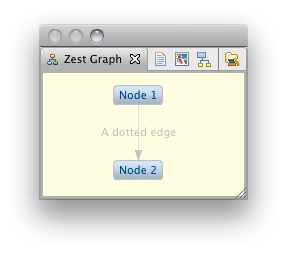

Graphviz DOT as a DSL for Zest
Note to non-wiki readers: This documentation is generated from the Eclipse wiki - if you have corrections or additions it would be awesome if you added them in the original wiki page
This Eclipse feature provides support for the Graphviz DOT language in Zest: The Eclipse Visualization Toolkit, both as an input and output format. It provides API und UI elements to transform both DOT graphs to Zest visualizations (to be used in Java SWT applications), and Zest visualizations to DOT graphs (to be rendered as image files with Graphviz).
Add the update site at http://quui.de/updates (Help -> Install New Software... -> Add...) and install the dot4zest feature (from the Zest category). Use the latest 0.9.x version for Helios, or the latest 0.8.x version for Galileo. Note that this is an external update site for easy access to preview releases, and not provided by the Eclipse Foundation.
In the UI, this feature adds two wizards ('New Zest Graph' and 'New Zest Project') under a category labeled 'Visualization':

And a 'Zest Graph' view:

This wizard sets up a Zest project. The project created by the wizard contains a 'templates' folder containing sample DOT files. The DOT files in the 'templates' folder are compiled to Zest graph subclasses automatically, and can be launched as Java applications to view the Zest Graph:

This implements a basic Zest authoring environment using DOT as a DSL, as upon saving the DOT file, the same Zest application can be relaunched, showing the Zest graph created from the changed DOT file. See the section on the graph view below for a way to visualize the DOT without running the generated class.
This wizard creates a new Zest graph subclass. In the first page the container and a graph template are selected, the resulting Zest graph for the template is previewed:

In the second page the DOT representation of the selected template can be customized. After the wizard finishes, it runs the generated Zest Graph to display the result (here customized in the second page):

The generated Zest file will be in the org.eclipse.zest.dot package. To get a compiling result without setting up anything, select the org.eclipse.zest.dot package in the src-gen folder of a Zest project as the container in the wizard (or select it before starting the wizard).
The Zest Graph view listens to changes made to *.dot files in the workspace. The view draws the DOT graphs using Zest and allows for image export of the current Zest graph. When a *.dot file is added to the workspace or altered in an editor, the Zest graph view is updated with the graph created from the *.dot file. For instance, consider a file with the .dot extension, containing the following DOT graph definition:
digraph s{
n1[label="Node 1"]; n2[label="Node 2"];
n1 -> n2[style=dotted label="A dotted edge"]
}
The view will display:

The view contains buttons to load a specific *.dot file, to export the current Zest graph as an image file by calling the dot executable, to layout the current graph, and to re-select the directory containing the dot executable (from left to right). When the image export button is selected, a PDF for the current graph is saved in the directory containing the input *.dot file. In this example, the export looks like this:

This completes the Zest-based DOT authoring environment: if the *.dot file is inside the templates/ folder of a Zest project, the file will both be visualized in the Zest Graph view (e.g. during editing) and compiled to a Zest graph subclass (e.g. to be used in a different application), and can be exported as a PDF with Graphviz.
At the same time the view provides a simple way to visualize *.dot file output of any kind of program, e.g. to visualize and debug internal data structures, results, etc: if a program running in Eclipse outputs any *.dot file in the workspace, the view will be updated with the corresponding Zest graph.
The Zest view can be used with the included DOT editor to visualize a DOT file:

Additionally, the Zest view also displays embedded DOT in other files, e.g. in source code comments or in wiki markup:

Via the API, DOT can be imported to Zest graph subclasses (*.java files) or Zest graph instances, and Zest graph instances can be exported to DOT or image files.
To import DOT to Zest, the DotImport class is used:
/* The DOT input, can be given as a String, File or IFile: */
DotImport importer = new DotImport("digraph Simple { 1;2; 1->2 }");
/* Compile the DOT input to a Zest graph subclass: */
File file = importer.newGraphSubclass();
/* Or create a Zest graph instance in a parent, with a style: */
Graph graph = importer.newGraphInstance(shell, SWT.NONE);
To export a Zest graph to DOT, the DotExport class is used:
/* For some Zest graph, we create the exporter: */
DotExport exporter = new DotExport(graph);
/* Export the Zest graph to DOT: */
String dot = exporter.toDotString();
/* Or to an image file, via a given Graphviz installation: */
File image = exporter.toImage("/opt/local/bin", "pdf");
The complete sample usage is available in the repository, as well as working DOT input samples.
The DOT import implementation contains experimental animation support, representing animation steps as subgraphs in the DOT input (which if rendered with Graphviz results in a static description of the animation).
For instance, for the input below a Zest animation is created in which the single steps can be executed by clicking the button below the graph:
digraph SampleAnimation {
/* We can specify a Zest layout for the animation here: */
layout=tree // = TreeLayoutAlgorithm
/* Global attributes can be defined for edges and nodes: */
node[label="Node"]
edge[label="Edge" style=dotted]
1;2;3;4;5
/* The single animation steps are marked by numbers: */
subgraph cluster_0{ 1 -> 2 [label="Dashed" style=dashed]}
subgraph cluster_1{ 1 -> 3 }
/* The final animation step needs to be marked with "end": */
subgraph cluster_2_end{ 3 -> 4; 3 -> 5}
}
After the first step:

And the final state of the graph:

The same input file, exported with Graphviz, shows the animation steps as subgraphs:

A possible use case for defining such animations with DOT is to easily create animated course material, e.g. to explain data structures. The same file defining the animation can be used to export a PDF illustrating the steps in a static way.
The goal of this feature is to implement the Graphviz DOT language as a domain-specific language (DSL) for Zest: The Eclipse Visualization Toolkit, both as an input and output format. In other words, the goal is to transform both DOT graphs to Zest visualizations (to be used in Java SWT applications), and Zest visualizations to DOT graphs (to be rendered as image files with Graphviz).
This feature started as a project in the Google Summer of Code 2009 by Fabian Steeg, mentored by Ian Bull, for Zest.
The main bug for this feature is bug 277380. View a complete list of related bugs. If you have suggestions for this feature you can file a new bug. The code for this feature is part of the CVS repository at dev.eclipse.org:/cvsroot/tools. The dot4zest bundles can be found in org.eclipse.gef/plugins, named org.eclipse.zest.dot.*.
To run the current work in progress code (in Eclipse 3.6 Helios), install the Zest, JET, Xpand, Xtext and MWE 1.x.x features (which are available from the Helios update site under the modeling category). You will also have to install the Xtext Antlr feature 1.x.x from the Itemis update site at http://download.itemis.com/updates/milestones (see the Xtext documentation for details on this).
Then, check out the bundles from the CVS location above. After the checkout, run (Run As -> MWE2 workflow) the GenerateDot.mwe2 in the /src/org/eclipse/zest/internal/dot/parser folder of the import bundle.
Run the *Suite.java test suites of the individual bundles (in src-test/) as JUnit tests to get an impression of the current implementation state. To test the UI components, run an Eclipse application configured with org.eclipse.zest.dot.ui and required plugins. See details on usage in the user documentation above.
Graphviz is a very popular tool and its DOT language is widely used. Support for it could make using Zest very easy for many people who are familiar with DOT.
DOT integration for Zest could also be useful for existing Eclipse tools that are based on Graphviz, like TextUML or EclipseGraphviz, and others, for instance in the Mylyn rich task editor (for embedding DOT graphs in wiki text markup, visualized with Zest).
On the output side, Zest can benefit from Graphviz output as it provides a way to produce high-quality export into different file formats, e.g. for printing Zest visualizations, or using them in digital publications.
The dot4zest functionality is implemented based on Eclipse Modeling technologies, in particular Xtext (part of TMF) and Xpand (part of M2T) for the input part (parse DOT, generate Zest) and JET for the output (see details below).
Based on an Xtext grammar, dot4zest uses an Xpand generator that transforms Graphviz DOT descriptions into Java code which creates an equivalent Zest visualization. There is also a way to define Zest animations using the DOT language (by representing animation steps as subgraphs in DOT, see user guide above). Besides this compiler, dot4zest also interprets the parsed DOT EMF model to dynamically create Zest graphs in the Zest view (see above).
To transform Zest graph instances to the Graphviz DOT language dot4zest uses JET.
There are two reasons to use JET instead of Xpand here. First, this allows us to transform any Zest graph instance to DOT directly (not only those for which we have a DOT meta model instance that could act as the input to Xpand).
Second, even if we had a DOT meta model instance (which we could create from the Zest graph), using Xpand would introduce a runtime dependency on the Modeling Workflow Engine, whereas with JET we only introduce a dependency on a single class (the generator class JET created from the template).
To make these transformations available to the user, the DOT to Zest transformations (which depend on Eclipse modeling technology at runtime) are available as part of the workbench, while the generated Zest graph classes and the DOT output can be used directly and without (or with very little, see above) additional runtime dependencies, e.g. in pure Zest SWT applications.
To generate Zest from DOT, dot4zest defines a wizard that creates a Zest graph subclass and basic sample usage code from Graphviz DOT input inside the wizard (see user documentation above). The wizard offers different DOT templates to the user (e.g. simple directed graph, simple animation), which can be edited in the wizard, with a live preview of what the Zest graph is going to look like.
Extending this kind of functionality, dot4zest adds a Zest project type where the DOT files are placed in a special folder (and can be edited conveniently using the included DOT editor). Using a project builder, the corresponding Zest Graph implementation classes are generated, which can be used from other parts of the project's code, similar to JET templates and generators.
To provide visualization of DOT graphs using Zest in a workbench, dot4zest contains a Zest graph view which views a DOT graph with Zest by interpreting the EMF model parsed from the DOT input (see user guide above).
graph.add("1->2"); // use DOT snippets to build the Zest graph
graph.load("graph.dot"); // load an entire DOT graph into an existing Zest graph
{kind=link}
{kind=link}